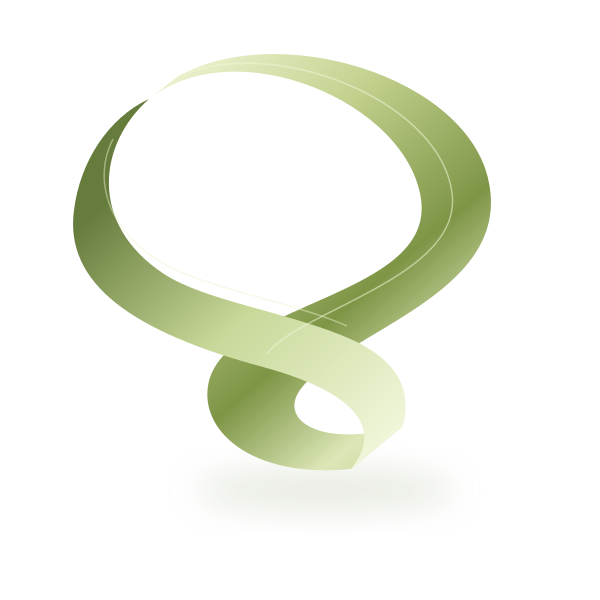

INDEPENDENT DESIGN STUDIO
A little different.
A lot more you.
We turn ambitious ideas into identities, websites and experiences that feel impossible to ignore.
Explore our work ↗Strategy. Identity. Digital.London · Everywhere

FIG. 01 / NEW PERSPECTIVES+A FEW GOOD COLLABORATIONS
Built to stand apart.
GOOD QUESTIONS
Let’s get
the details right.
What do you actually do?+
We work across strategy, brand identity and thoughtful digital experiences. Every project starts with a conversation.
Can we work together remotely?+
Absolutely. We collaborate with independent teams across the world.
Where does a project begin?+
With your ambition, not a template. Tell us what you are trying to change.